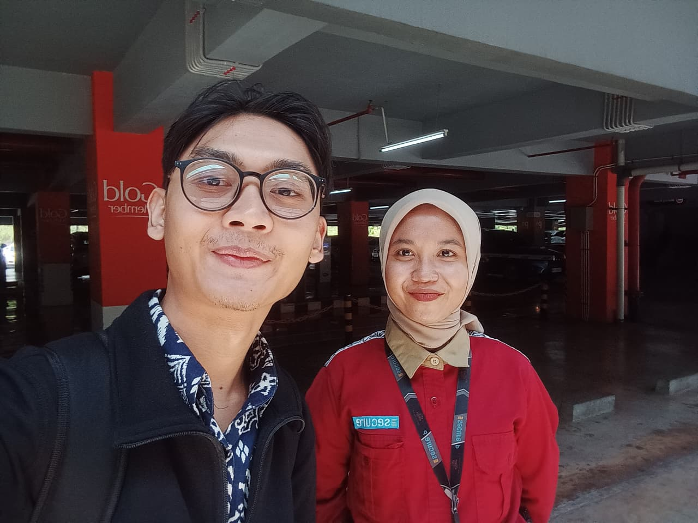
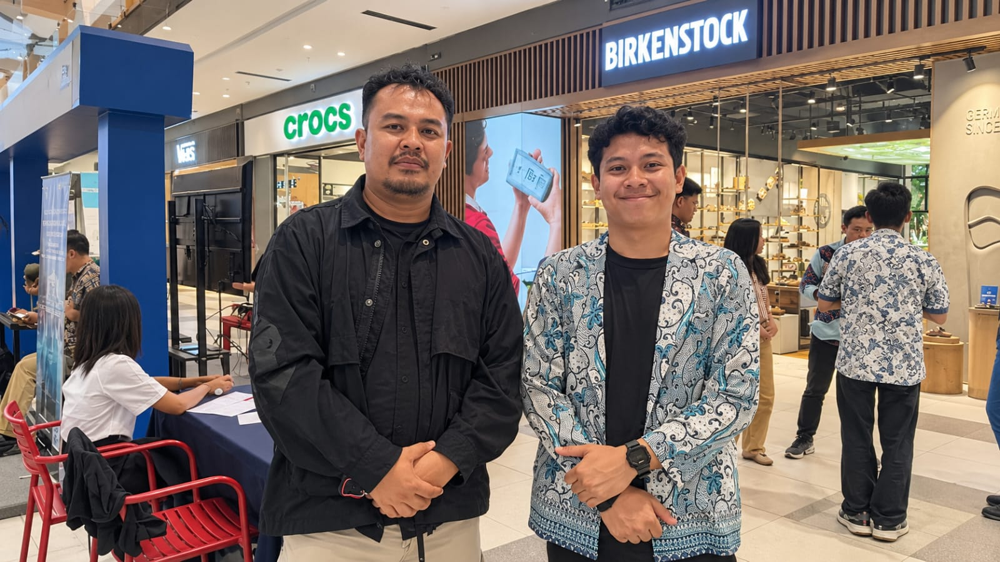
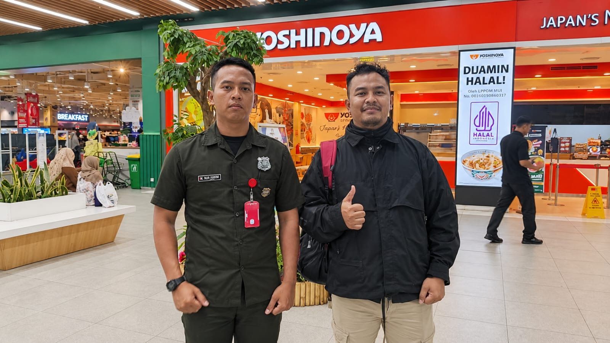
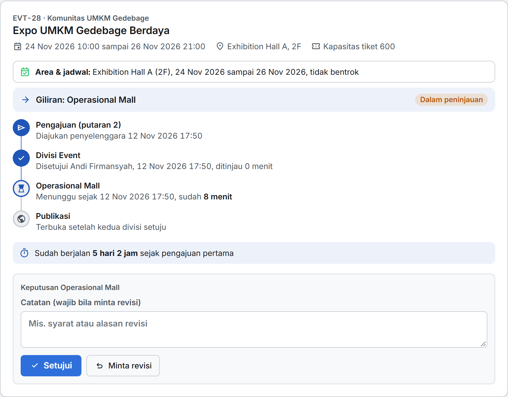
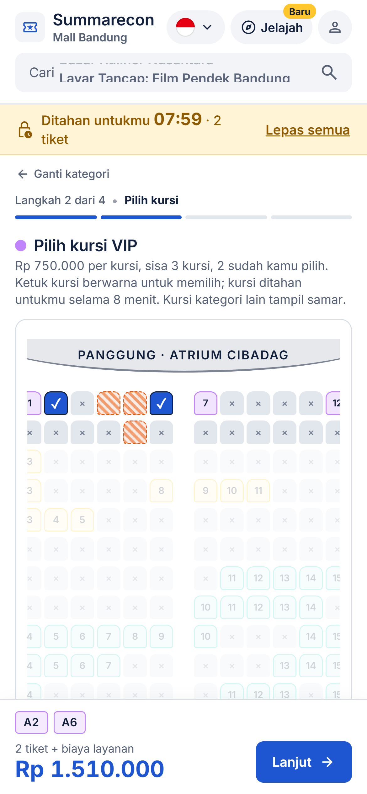
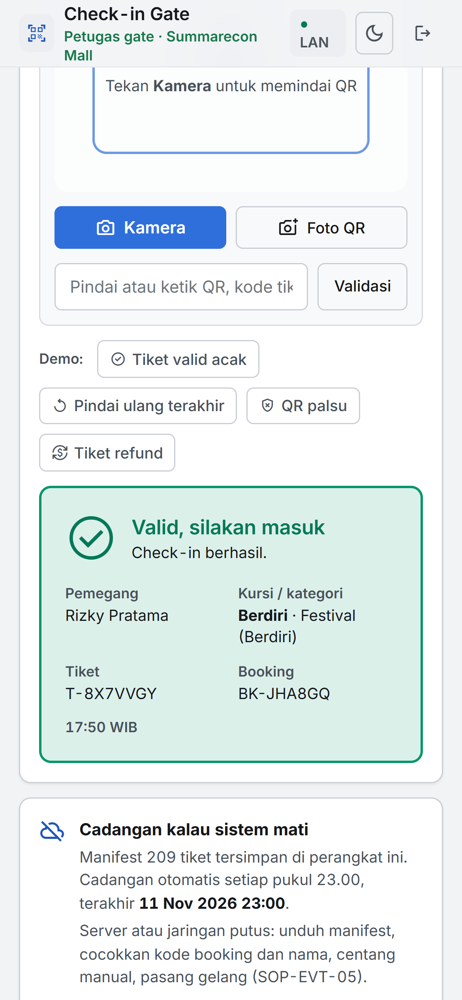
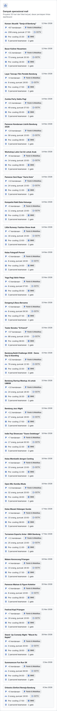
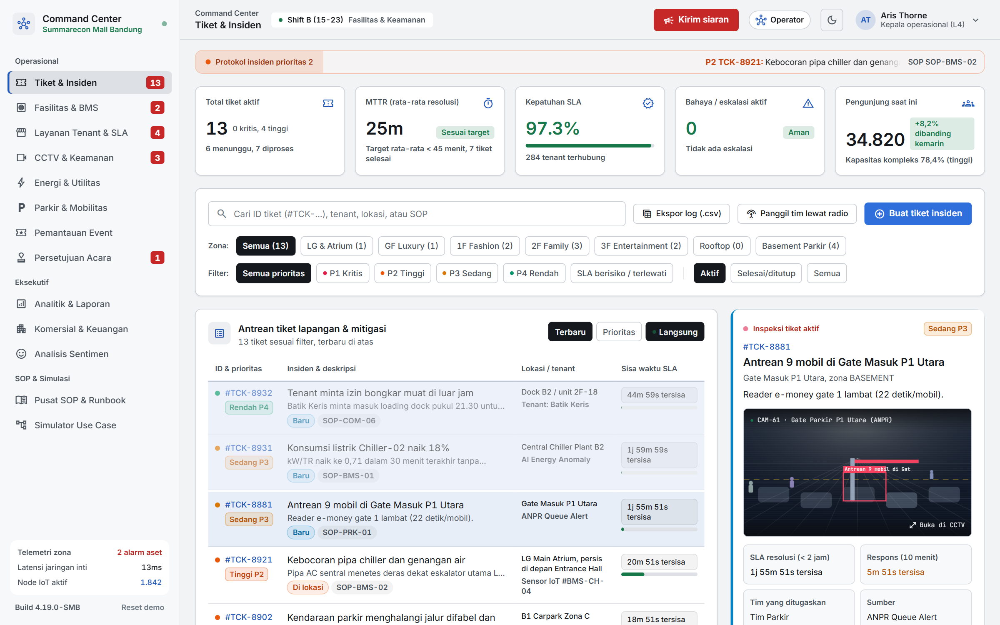
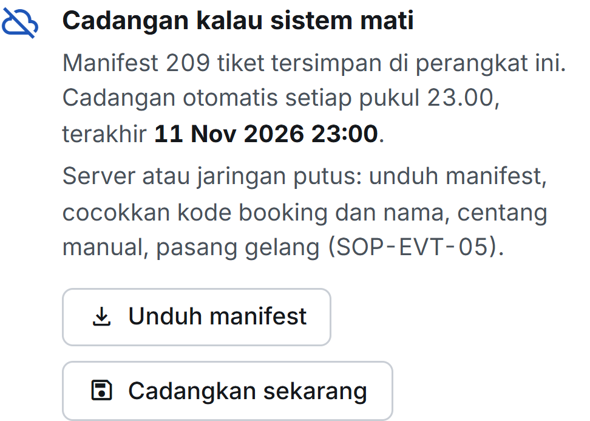

Event di Summarecon Mall Bandung, terpantau sebelum penuh.
SMICC-TS, sistem tiket dan check-in event yang terhubung ke Command Center mall. Dibuat oleh tim Iso Iso Wae.
Denah Ground Floor, digambar ulang dari papan denah di mall (12 Nov 2026)
Event hampir setiap hari, tapi tidak ada yang tahu berapa orang yang sudah masuk.
Tiket
Dijual lewat loket.com. Datanya milik platform.
Peserta
Ditandai gelang. Tidak tercatat di sistem Summarecon.
Kendaraan
Gate parkir manual. Ditutup setelah penuh.
Pemantauan
CCTV dan 2 petugas mobile per shift.
event per bulan, untuk Summarecon dan tenant. Keempatnya berjalan sendiri-sendiri.

Kamis pagi, parkir motor sudah penuh.
Kamis, 12 November 2026, sebelum pukul 11.30. Hari kerja, belum ada event besar.
Area Parkir Barat dipakai Festival Kuliner Bandung Vol. 3
keluhan pengunjung di Google Maps menyebut parkir
Setiap 1% pengunjung yang batal datang, belanja yang hilang dari mall:
Sekitar Rp9 miliar per tahun, dari belanja di tenant saja.
Kami bicara langsung dengan tiga orang yang merasakannya.

Inginnya yang masuk itu tercatat di sistem, jadi bisa kepantau.

Kalau sudah penuh baru gate di-cut, sisanya dilempar ke bahu jalan.
Kalau lagi rame banget, tidak ke-handle.
Satu alur: dari pengajuan acara sampai orang dan kendaraan di lokasi.
Ajukan dan setujui
Tenant/EO mengajukan, Divisi Event dan Operasional Mall menyetujui. Area dan lahan parkir dicek.

Jual tiket
Pengunjung memilih kursi, kursi ditahan 8 menit, e-ticket QR terbit.

Check-in QR
Petugas gate memindai. Setiap peserta tercatat saat masuk.

Command Center
Jumlah orang, perkiraan kendaraan, dan insiden gate terlihat langsung.

loket.com menjual tiket. SMICC-TS memantau mall.
Summarecon sudah memakai loket.com. Datanya berhenti di penjualan.
| loket.com (sekarang) | SMICC-TS | |
|---|---|---|
| Data peserta | Milik platform, terpisah per event | Milik Summarecon, satu dasbor untuk semua event |
| Event gratis dan tenant | Tidak tercakup | Tercatat lewat registrasi dan check-in |
| Peserta yang masuk | Gelang, tidak terhubung | Setiap peserta tercatat saat check-in QR |
| Parkir | Tidak ada | Perkiraan tambahan kendaraan dari tiket terjual |
| Masalah di lapangan | Tidak ada | Anomali gate otomatis jadi tiket insiden dan SOP |
Dari menangani setelah penuh, menjadi bertindak sebelum pengunjung pergi.
Mulai dari satu event, lalu terhubung langsung ke gate parkir dan CCTV.
Uji coba satu event
- Atrium CibadagCheck-in QR dan Command Center untuk satu event Summarecon
- Hitung ulangJumlah peserta tercatat dibandingkan hitungan manual
Parkir terhubung
- Plat didaftarkan saat beli tiketBu Mei tidak lagi mengetik plat manual
- Gate parkir dan ANPRSisa slot terbaca langsung, peringatan muncul sebelum penuh
Mall terhubung
- CCTV penghitung orangPak Asep tahu atrium mulai penuh tanpa menebak
- Kebersihan mengikuti keramaianJadwal toilet menyesuaikan jumlah pengunjung
- Ulasan dari X, TikTok, InstagramSekarang baru Google Maps

Bagaimana kalau Pak Ade tahu parkir akan penuh, tiga hari sebelum event?
Terima kasih.
Event Summarecon, terpantau sebelum penuh.
Pindai untuk mencoba prototype
Rp25 juta per hari itu dari mana?
| Kebocoran | Hitungan | Hasil | Dasar | |
|---|---|---|---|---|
| A | Belanja di tenant mall | 25.000 pengunjung per hari kerja × Rp100.000 = Rp2,5 miliar per hari. 1% batal = Rp25 juta | Rp25 juta/hari per 1% | Bisnis.com (target pengunjung); APPBI via Jatim Times (belanja Rp100–150 ribu); Snapcart (82% pengunjung event berbelanja) |
| B | Omzet event | Roeang Kita: Rp12 miliar ÷ 3 hari = Rp4 miliar per hari. 1% batal = Rp40 juta | Rp120 juta/event per 1% | Journal Arta |
| C | Lahan parkir dipakai event | 34 hari × ±800 slot (asumsi Area Parkir Barat = satu area) | 27.200 slot-hari | Bu Mei; Fimela |
| D | Jadwal atrium dan area | Area tertahan selama pengajuan lewat 2 divisi; bentrok jadwal baru ketahuan belakangan | ±30 event/bulan | Pak Ade |
| E | Penanganan yang terlambat | Gate ditutup setelah penuh, kendaraan ke bahu jalan; toilet ditangani setelah ada keluhan | Waktu petugas | Pak Asep; Pak Ade |
| F | Reputasi | Keluhan publik naik saat FKB dan Roeang Kita | 125 keluhan | Scraping Google Maps |
1% adalah satuan supaya bisa dihitung ulang, bukan klaim. Kalau 5% pengunjung batal, berarti Rp125 juta per hari. Berapa yang batal belum pernah tercatat, dan itu yang akan dicatat SMICC-TS. Tarif parkir resmi belum tersedia, jadi C belum dirupiahkan.
Kalau sistem mati saat event, gate tetap jalan.
- T+0Gate melaporCheck-in gagal memuat di semua gate, lapor ke Command Center lewat radio
- T+5Mode cadanganIT cek server dan jaringan. Tidak pulih dalam 5 menit, Command Center membuat tiket insiden P2
- T+6Manifest cadanganGate membuka manifest di perangkat, cocokkan kode booking dan nama, centang manual, pasang gelang
- T+10Antrean dijagaGate tambahan dibuka supaya pengunjung tidak menumpuk di atrium
- H+1Data dipulihkanCentang manual dimasukkan ulang ke sistem, laporan pasca-acara

Manifest dicadangkan otomatis setiap pukul 23.00 di perangkat gate dan bisa diunduh tanpa server. Sistem juga bisa jalan di laptop tanpa internet.
Ribuan pembeli bersamaan: satu kursi tetap satu pembeli.
Pembeli serentak, satu kursi
Hanya satu yang berhasil, 24 ditolak. Uji tekan di prototype.
QR sama dipindai bersamaan
Hanya satu yang diterima, gate lain mendapat SUDAH DIGUNAKAN.
Kursi ditahan, lalu bayar
Tidak bayar dalam batas waktu, kursi dilepas dan dijual lagi. Pembayaran ganda tidak menerbitkan tiket dua kali.
Siapa yang mengoperasikan?
Tenant/EO
Membuat acara, mengunggah dokumen, mengajukan
Divisi Event
Memeriksa konsep, jadwal, dan area
Operasional Mall
Memeriksa teknis, keamanan, dan parkir
Pengunjung
Membeli tiket dan menerima QR
Petugas gate
Memindai QR di ponsel
Command Center
Tim operasional mall memantau dan menangani insiden
Setiap peran punya akun sendiri. Tenant hanya melihat acaranya, divisi hanya memutuskan pada gilirannya, dan semua langkah tercatat di log aktivitas.
Apa kata pengunjung? Parkir paling sering dikeluhkan.
Keluhan per topik dari 125 keluhan; satu ulasan bisa menyebut lebih dari satu topik.
Management parkir nya kacau, 1 jam sudah ngantri, dibuat satu jalur jadi macet nya domino, yang mau keluar harus nunggu parki juga.
Ulasan Google Maps, Oktober 2026, rating 1
Segitu luasnya parkiran masih juga sulit dptnya, apa karna asa acara ya.
Ulasan Google Maps, November 2026, rating 4
Bagaimana data dan akses dijaga?
Akun per peran
Tenant/EO, Tim Event Mall, Divisi Event, Operasional Mall, operator Command Center, dan petugas gate punya akun terpisah.
Login dikunci sementara
Setelah 5 kali salah, login dari perangkat itu dikunci 60 detik.
Server menolak yang tidak berhak
Tenant hanya bisa mengubah acaranya, divisi hanya memutuskan pada gilirannya, publikasi hanya setelah disetujui.
Log aktivitas berantai
Setiap pengajuan, keputusan, dan perubahan tercatat dengan pelaku dan waktu, bisa diunduh sebagai CSV.
Riset dilakukan langsung di Summarecon Mall Bandung.
Pak Asep, Security
Pemantauan keramaian lewat CCTV, gate parkir ditutup setelah penuh
Pak Ade, PIC Event
Event hampir setiap hari, tiket lewat loket.com, approval lewat 2 divisi
Bu Mei, Petugas Parkir
Parkir motor penuh 1.200, plat motor diketik manual